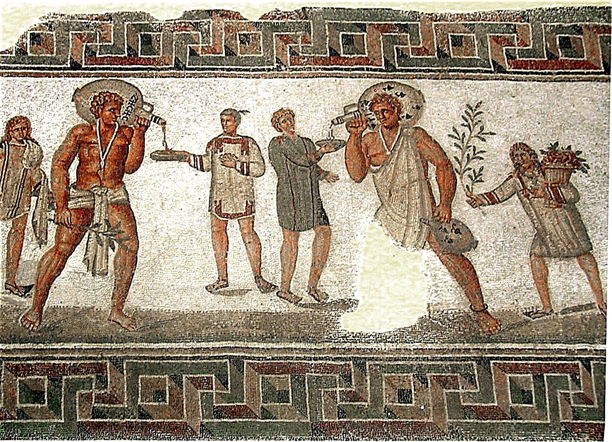

Escravos

No Império Romano, os escravos eram considerados uma propriedade legal e a força de trabalho essencial. Eles não possuíam direitos civis, sendo forçados a trabalhar na agricultura, nas minas, na construção e nos serviços domésticos.
Capturados em guerras de expansão, eles podiam ser comprados, vendidos ou até mortos por seus senhores. Diferente de outros períodos históricos, a escravidão romana não era baseada na raça, mas sim na conquista militar e em dívidas. A vida variava drasticamente dependendo da função. Os escravos rurais e de minas enfrentavam condições brutais, trabalho exaustivo e violência extrema.
Os escravos urbanos e domésticos podiam ter uma vida menos dura e, por vezes, viviam em grande proximidade com seus donos. Alguns atuavam como médicos, professores e contadores. Ao contrário do modelo comum, a libertação era algo normal. Os escravizados podiam comprar a própria liberdade ou recebê-la como recompensa por bons serviços, tornando-se cidadãos livres conhecidos como libertos.